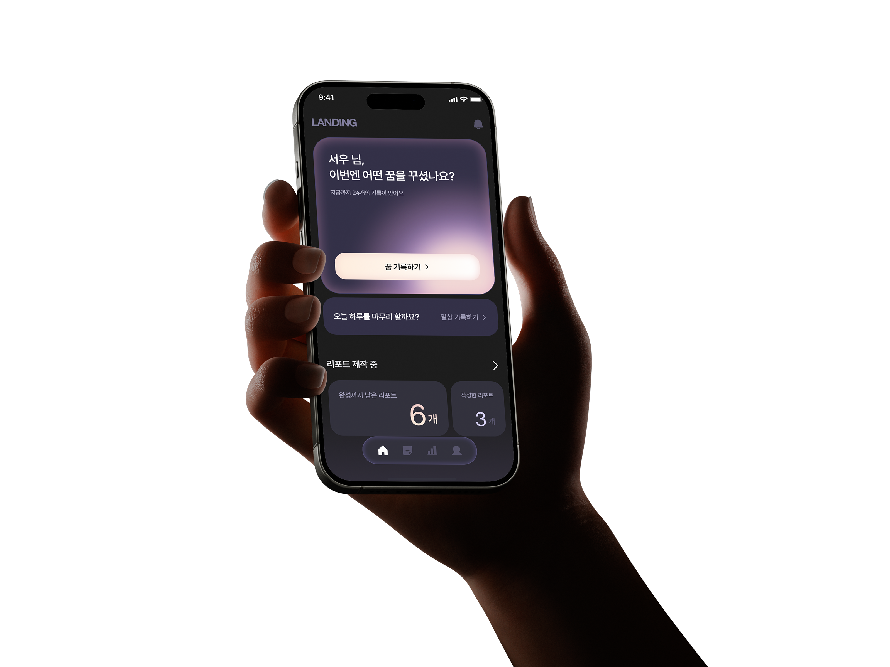
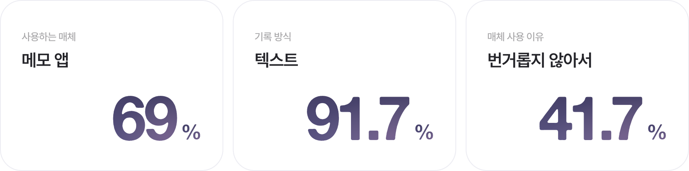
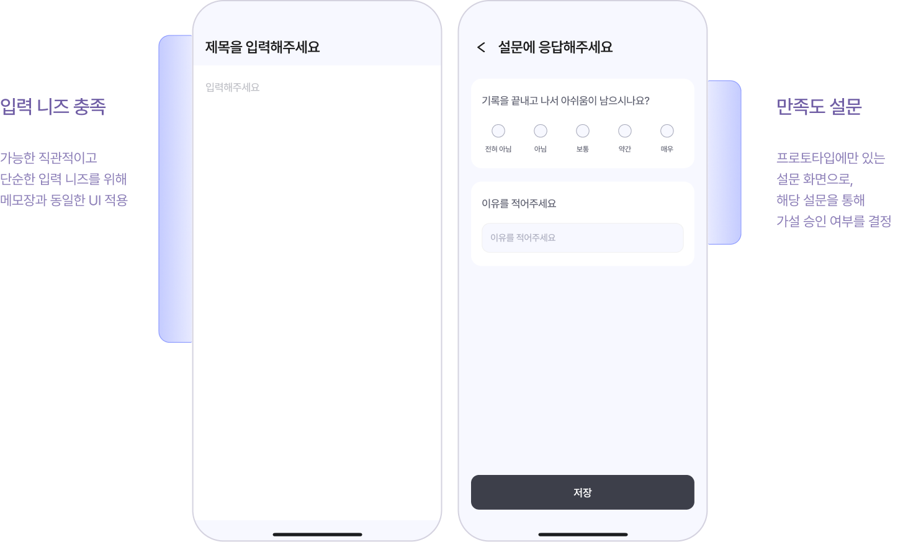
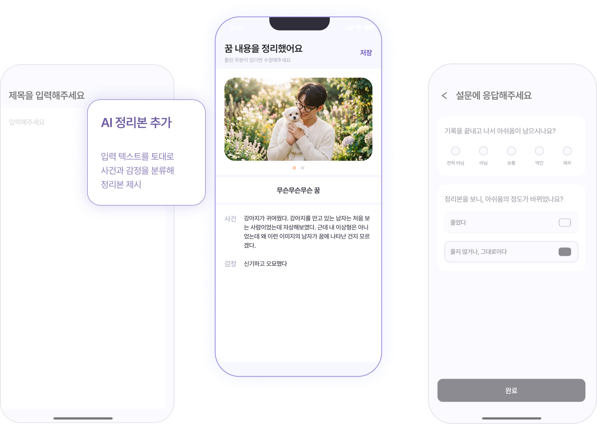
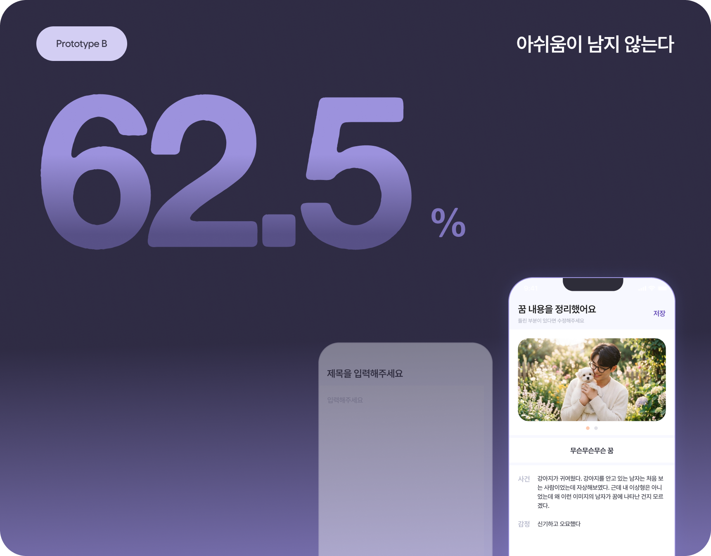
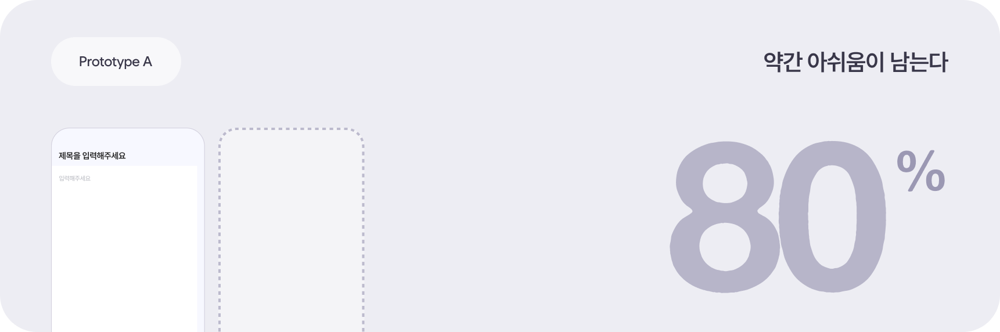

꿈 기록을 통해 몰랐던 감정을 파악할 수 있다
억눌린 내면의 표현
분석심리학연구소 소장 이유경일상생활 중 억눌린 본성적 욕구, 정신을 꿈을 통해 자아에게 전달하려 하는 것
꿈 기록을 통한 자기 이해
치유상담대학원대 상담심리학과 교수 고혜경당사자의 경험에 관련되어 꿈을 해석하는 자세가 내면을 깊이 들여다보기에 적합하므로, 일반적인 해석보다 기록을 통해 꿈에서 느꼈던 감정을 언어화하는 과정이 중요하다 .
꿈을 통해 몰랐던 감정을 알아가는 서비스,
LANDING

꿈은 미처 알아채지 못한 감정을 드러내기 때문에, 꿈을 기록함으로써 자신의 감정과 정신상태를 이해할 수 있습니다
일상생활 중 억눌린 본성적 욕구, 정신을 꿈을 통해 자아에게 전달하려 하는 것
당사자의 경험에 관련되어 꿈을 해석하는 자세가 내면을 깊이 들여다보기에 적합하므로, 일반적인 해석보다 기록을 통해 꿈에서 느꼈던 감정을 언어화하는 과정이 중요하다 .
뱀이 나오면 길몽, 이가 빠지면 우환 등 주술적 해몽은 수많은 사람의 고유한 배경과 감정을 고려하지 못함
내 감정이 보내는 신호를 읽어내지 못하고 외부의 획일적인 잣대에 의존하게 되어 꿈이 가진 메시지를 놓치게 됨
꿈의 원인을 현재의 감정 상태가 아닌 우연한 징조로 인식하게 해 현실과 동떨어진 해석에 이르게 됨

꿈에서 느낀 감정을 포함해 기록을 꾸준히 이어간다
단순한 꿈인지, 일상에서 영향을 받은 포인트가 있었는지 비교하기 위해 일상의 기록을 수집한다
기록을 모아 반복되는 감정, 꿈에서 반복적으로 등장하는 요소를 추적한다
잠에서 막 깨어난 와중에도 기록하기 편하도록, 빠르게 접근하고 자유롭게 기록합니다. 모든 꿈 내용을 떠올리려 무리하여 기록하지 않고, 기억나는 내용만 적어도 충분하도록 꿈 기록을 자동으로 정리합니다.
메모장에 입력하듯 빠르게 접근할 수 있고, 자유롭고 형식 없는 기록을 선호

꿈 내용을 전부 기록하고 싶지만, 일부를 잊게 되어 기록이 만족스럽지 않고 찝찝하다

내용을 잊어도 꿈 기록에 만족할 수 있어야 한다
정리본이 없는 프로토타입 A와, 정리본이 있는 프로토타입 B의 주관적 만족도를 비교한다


A에 비해, 프로토타입 B의 만족도가 높고 아쉬움의 정도가 낮았다
Q. 기록을 끝내고, 못 다 적은 내용에 대해 아쉬움이 남으시나요?


이름을 입력해주세요
이미지를 클릭해 프롬프트를 수정할 수 있어요